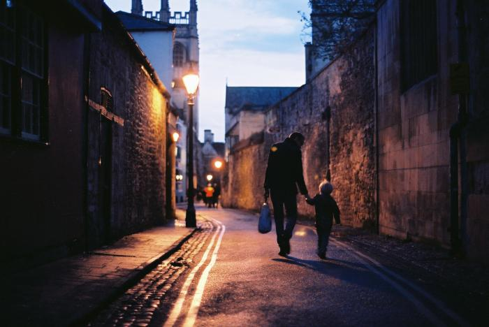
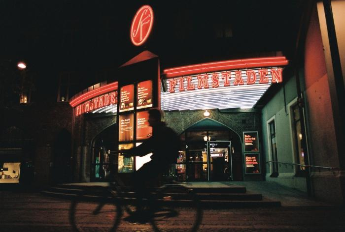
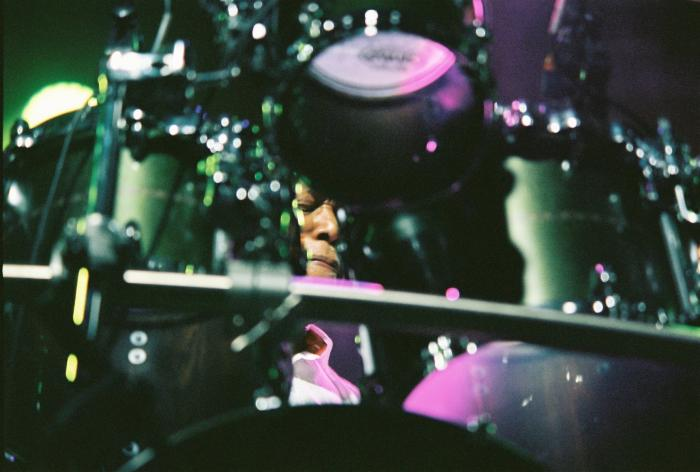

The current endeavour is the band Lily Pad that I formed with my girlfriend. We write music that I later produce and mix.
Our music is available on all major streaming platforms:
Music was always there in one form or another. I spent 10 years learning to play clarinet.
I did not continue clarinet education but everything I have learned is still useful in my further musical adventures.
Final chapter of clarinet education was my recital in May 2016:
Francis Poulenc - Clarinet Sonata
Robert Schumann - Fantasiestücke, Op. 73
After obtaining a diploma I did what many clarinet players do, namely picked up the saxophone and started to play jazz.
I really enjoy learning about jazz harmony. It is a subject somewhere between art and science and I find it very compelling.
In order to learn more I attended International Jazz Workshops in Chodziez three times during the summer.
During my last year at the university I joined the big band as the guitar player.
Photography
I am an avid analog photographer. My Olympus OM-2 is a necessary companion on any trip.
Tate Modern
Oxford
Lund, trip to ESS during my placement
Billy Cobham in concert
Lisbon, MAAT
Buildings in Warsaw
Societies
At the university I belonged to a few societies and I was on a commitee of two of them.
Swing Dance Society
Treasurer, teacher
I joined swing dance in my second year.
I instantly fell in love with dancing and with incredibly strong community stretching across the country.
I met great people and visited Swing Revolution in Leeds, Whip-ma-whop-ma-hop in York and helped with organising Leicester Leaps In.
I teach beginners classes and participate in various events as volunteer.
Most recently I led an introductory lesson in Queniborough community centre, during a charity gig of Syston Big Band.
Philosophy Society
Vice-president
Since University of Leicester does not have a philosophy department, the society is a group of students more or less loosely interested in philosophical topics.
On weekly meetings one of the commitee members would introduce everyone to a subject and then lead the discussion.
Topics vary from classical philosophical dillemas to more contemporary discussions on philosophy of politics and economical systems.
Big band
Guitar
I joined the University of Leicester Big Band as a guitar player in order to learn more about harmony and reading jazz notation.
Big band plays charity gigs, sometimes on a swingaree organised by swing community in the city.
 Lisbon, MAAT
Lisbon, MAAT Buildings in Warsaw
Buildings in Warsaw